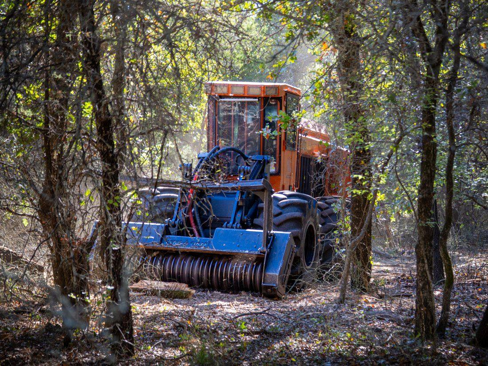
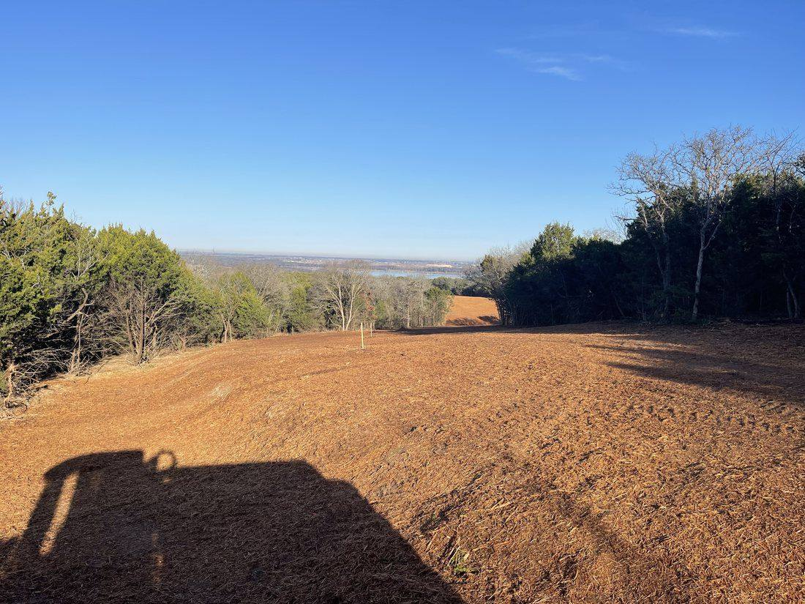
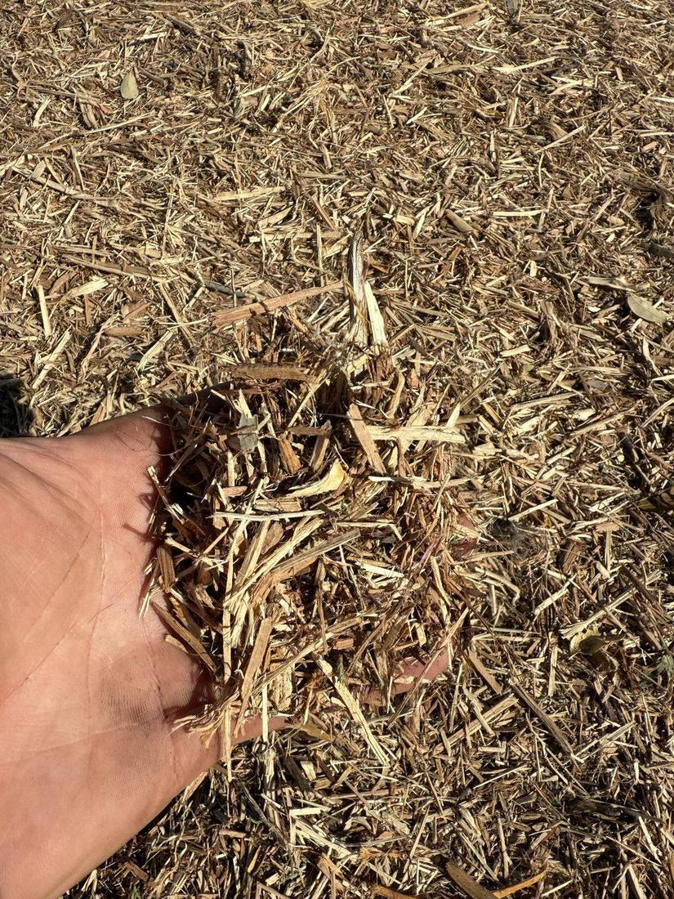
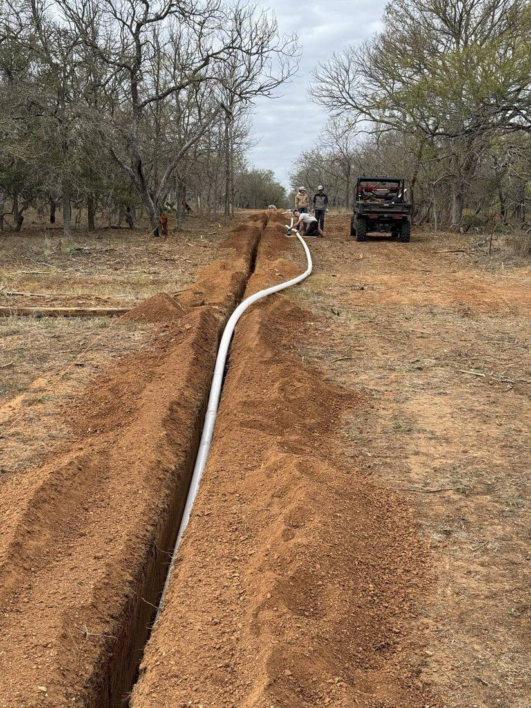
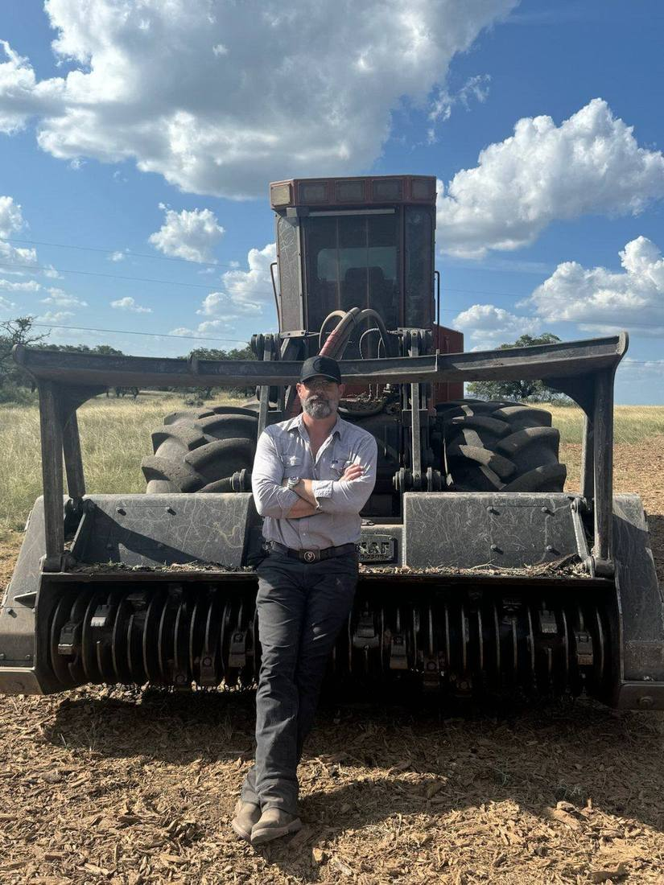
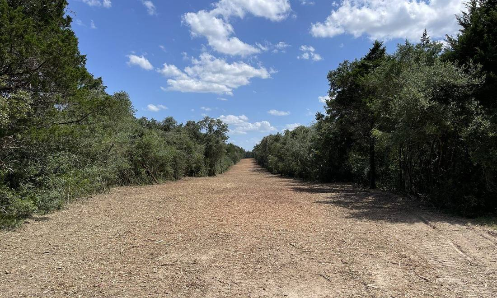
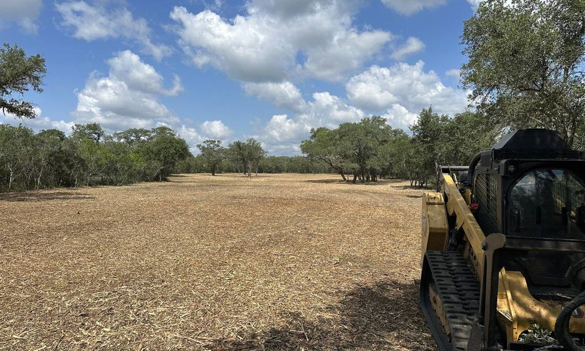
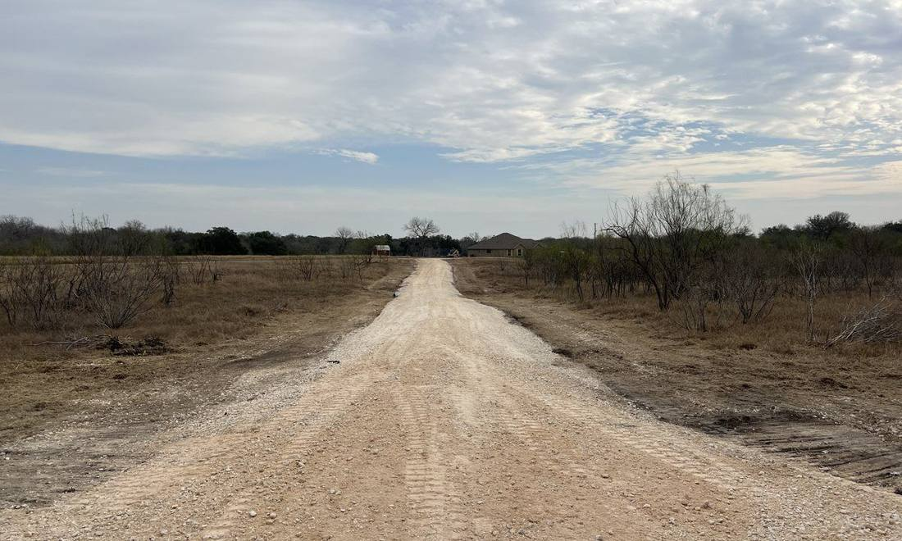

The 9 Arrow Journal
Straight talk for Texas landowners — pricing, methods, and how to get the most out of your land.

Done right, clearing is one of the highest-return improvements to Texas land — usable acreage, curb appeal, ag valuation.
Read more ›››June 23, 2026
Late fall and winter are the sweet spot for clearing in Texas. Why — plus the oak wilt window you need to avoid.
Read more ›››June 21, 2026
Ashe juniper doesn't grow back if you remove it right. The one rule that kills cedar for good, plus the follow-up plan.
Read more ›››June 20, 2026
Mulching or a dozer? How the two methods compare on cost, soil health, speed, and mess — and when each one wins.
Read more ›››June 19, 2026
Real per-acre pricing for forestry mulching in Texas — what moves the number and how acreage changes the rate.
Read more ›››June 18, 2026
Cedar and mesquite steal water and grass. When to clear, how selective mulching reclaims pasture, and what comes back.
Read more ›››June 16, 2026
A plain-English guide to forestry mulching — how it works, what it leaves behind, and why it beats traditional clearing.
Read more ›››June 12, 2026
What land clearing really costs in Central Texas in 2026 — the factors that drive price and how mulching compares.
Read more ›››June 10, 2026It does not get better.
Tell us about your land — you'll know the cost before we start.
Request an Estimate